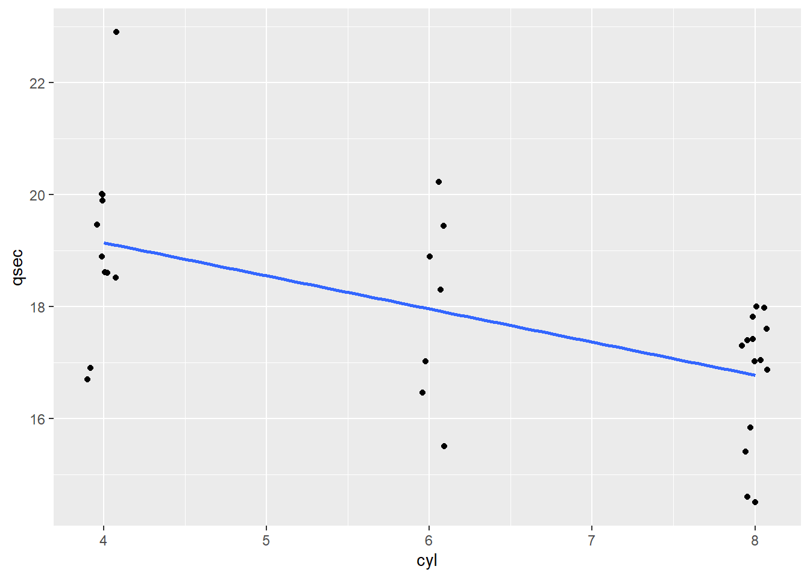
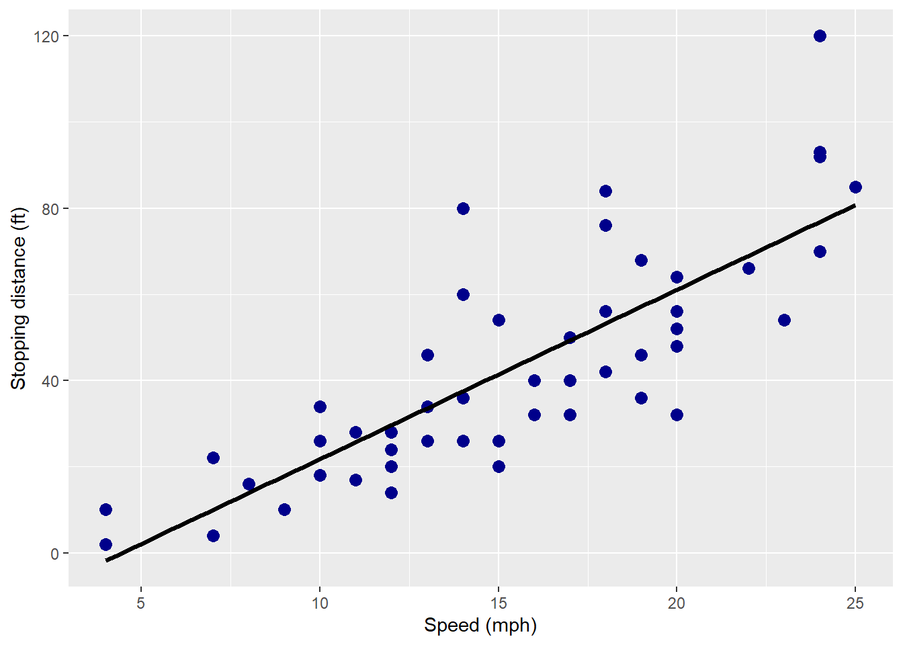
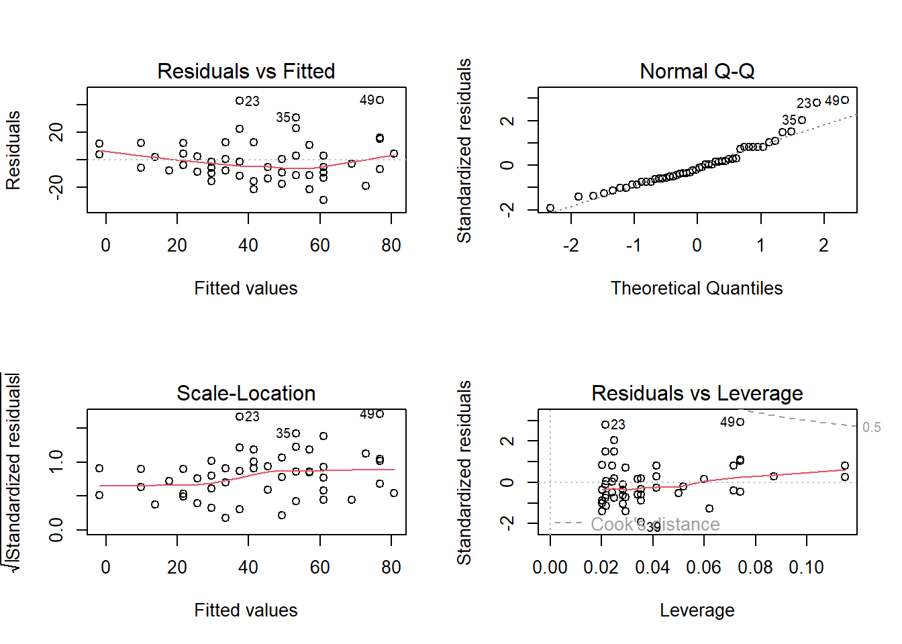
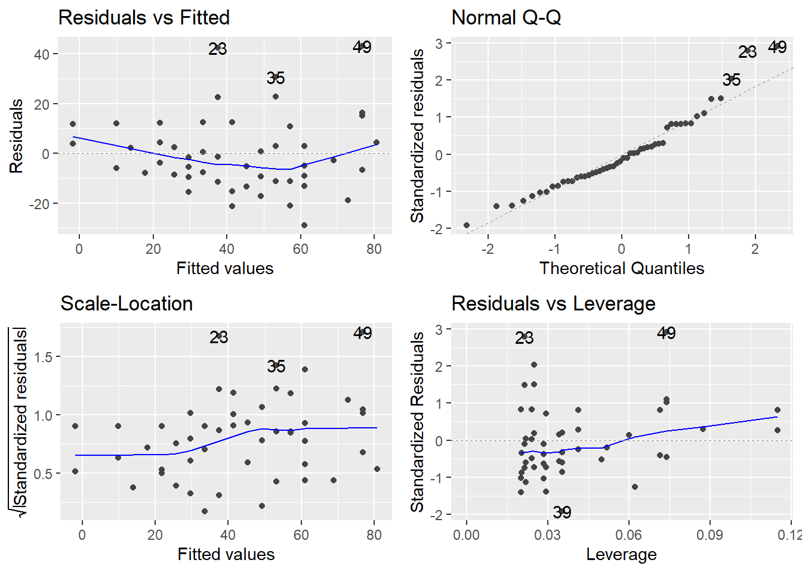
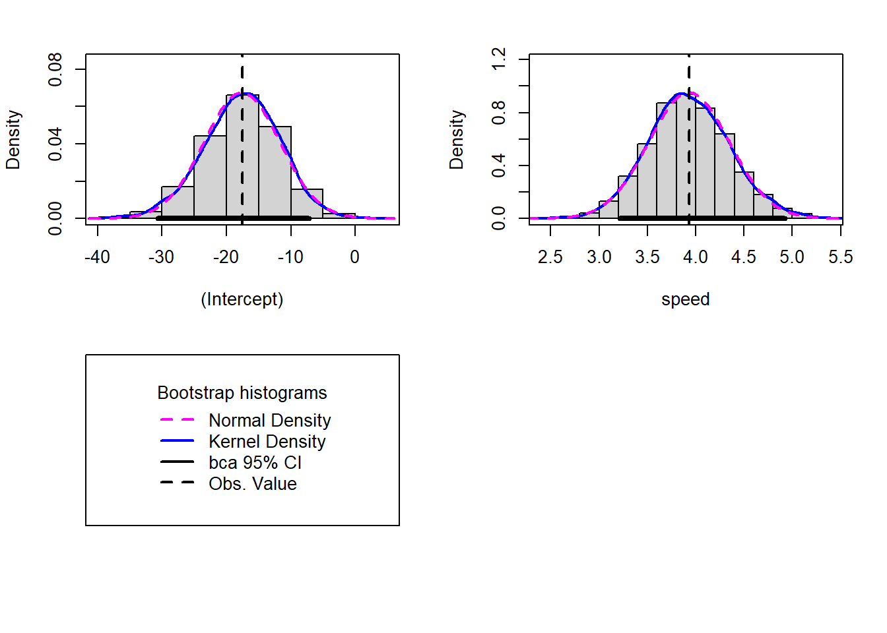
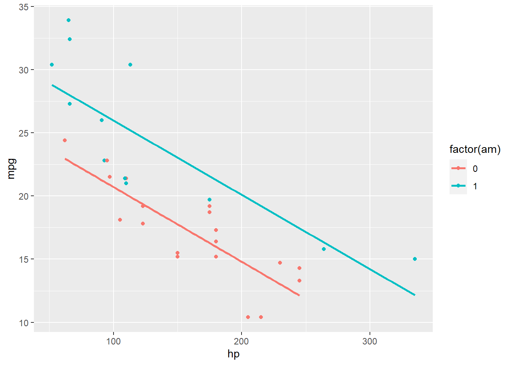
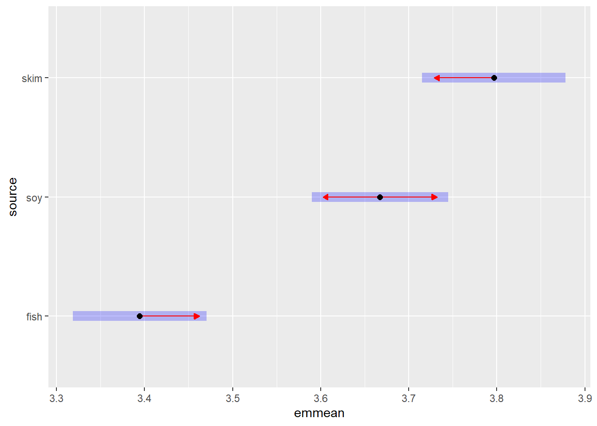

7 Extra
7.1 Introduction
The overall goal is to give you a very quick introduction to conducting correlation and regression analyses in R.
7.2 Correlation
The Pearson product moment correlation seeks to measure the linear association between two variables, \(x\) and \(y\) on a standardized scale ranging from \(r = -1 -- 1\).
The correlation of x and y is a covariance that has been standardized by the standard deviations of \(x\) and \(y\). This yields a scale-insensitive measure of the linear association of \(x\) and \(y\). For much more conceptual detail, see this: https://psu-psychology.github.io/psy-597-SEM/01_correlation_regression/01_Correlation_and_Regression.html.
\[r_{XY}= \frac{s_{XY}}{s_{X} s_{Y}}\]
7.3 Correlation matrix
to_correlate <- mtcars %>% dplyr::select(qsec, cyl, disp, hp)
cor(to_correlate)## qsec cyl disp hp
## qsec 1.000 -0.591 -0.434 -0.708
## cyl -0.591 1.000 0.902 0.832
## disp -0.434 0.902 1.000 0.791
## hp -0.708 0.832 0.791 1.0007.4 Testing a bivariate association
Recall that the significance of correlations are computed on \(n - 2\) degrees of freedom.
The t-test is:
\[ t = \frac{r \sqrt{n - 2}}{\sqrt{1 - r^2}} \]
cor.test(mtcars$qsec, mtcars$cyl)##
## Pearson's product-moment correlation
##
## data: mtcars$qsec and mtcars$cyl
## t = -4, df = 30, p-value = 4e-04
## alternative hypothesis: true correlation is not equal to 0
## 95 percent confidence interval:
## -0.779 -0.306
## sample estimates:
## cor
## -0.591Note that we can use the conf.int argument to cor.test to get different levels of confidence.
cor.test(mtcars$qsec, mtcars$cyl, conf.level = 0.9)##
## Pearson's product-moment correlation
##
## data: mtcars$qsec and mtcars$cyl
## t = -4, df = 30, p-value = 4e-04
## alternative hypothesis: true correlation is not equal to 0
## 90 percent confidence interval:
## -0.755 -0.358
## sample estimates:
## cor
## -0.5917.5 Visualizing the association
ggplot(to_correlate, aes(x=cyl, y=qsec)) + geom_jitter(width=0.1) + stat_smooth(method="lm", se=FALSE)
7.6 Testing the significance of all correlations in the matrix
Hmisc::rcorr(to_correlate %>% as.matrix())## qsec cyl disp hp
## qsec 1.00 -0.59 -0.43 -0.71
## cyl -0.59 1.00 0.90 0.83
## disp -0.43 0.90 1.00 0.79
## hp -0.71 0.83 0.79 1.00
##
## n= 32
##
##
## P
## qsec cyl disp hp
## qsec 0.0004 0.0131 0.0000
## cyl 0.0004 0.0000 0.0000
## disp 0.0131 0.0000 0.0000
## hp 0.0000 0.0000 0.0000Notice that we now get a matrix of p-values, too…
7.7 Pretty output
stargazer(cor(to_correlate), type = "html")| qsec | cyl | disp | hp | |
| qsec | 1 | -0.591 | -0.434 | -0.708 |
| cyl | -0.591 | 1 | 0.902 | 0.832 |
| disp | -0.434 | 0.902 | 1 | 0.791 |
| hp | -0.708 | 0.832 | 0.791 | 1 |
#you can use the filename argument to write out the table as a Word doc!
apaTables::apa.cor.table(to_correlate)##
##
## Means, standard deviations, and correlations with confidence intervals
##
##
## Variable M SD 1 2 3
## 1. qsec 17.85 1.79
##
## 2. cyl 6.19 1.79 -.59**
## [-.78, -.31]
##
## 3. disp 230.72 123.94 -.43* .90**
## [-.68, -.10] [.81, .95]
##
## 4. hp 146.69 68.56 -.71** .83** .79**
## [-.85, -.48] [.68, .92] [.61, .89]
##
##
## Note. M and SD are used to represent mean and standard deviation, respectively.
## Values in square brackets indicate the 95% confidence interval.
## The confidence interval is a plausible range of population correlations
## that could have caused the sample correlation (Cumming, 2014).
## * indicates p < .05. ** indicates p < .01.
## 7.8 Keeping the correlations for further analysis
Here, we store all details of the bivariate correlation test as an R object ctest.
ctest <- cor.test(mtcars$qsec, mtcars$cyl)Let’s poke under the hood:
str(ctest)## List of 9
## $ statistic : Named num -4.02
## ..- attr(*, "names")= chr "t"
## $ parameter : Named int 30
## ..- attr(*, "names")= chr "df"
## $ p.value : num 0.000366
## $ estimate : Named num -0.591
## ..- attr(*, "names")= chr "cor"
## $ null.value : Named num 0
## ..- attr(*, "names")= chr "correlation"
## $ alternative: chr "two.sided"
## $ method : chr "Pearson's product-moment correlation"
## $ data.name : chr "mtcars$qsec and mtcars$cyl"
## $ conf.int : num [1:2] -0.779 -0.306
## ..- attr(*, "conf.level")= num 0.95
## - attr(*, "class")= chr "htest"So, we can poke around and grab specific things:
ctest$p.value## [1] 0.000366ctest$estimate## cor
## -0.591And there are useful helper packages, especially broom, that will help you work with statistics objects as data.frame objects.
broom::glance(ctest)## # A tibble: 1 × 8
## estimate statistic p.value parameter conf.low conf.high method alter…¹
## <dbl> <dbl> <dbl> <int> <dbl> <dbl> <chr> <chr>
## 1 -0.591 -4.02 0.000366 30 -0.779 -0.306 Pearson's pr… two.si…
## # … with abbreviated variable name ¹alternative7.9 Correlation method
You can use a different correlation method (e.g., Spearman) using the method argument:
cor.test(mtcars$qsec, mtcars$cyl, method = "spearman")##
## Spearman's rank correlation rho
##
## data: mtcars$qsec and mtcars$cyl
## S = 8579, p-value = 6e-04
## alternative hypothesis: true rho is not equal to 0
## sample estimates:
## rho
## -0.572cor(to_correlate, method = "spearman")## qsec cyl disp hp
## qsec 1.000 -0.572 -0.460 -0.667
## cyl -0.572 1.000 0.928 0.902
## disp -0.460 0.928 1.000 0.851
## hp -0.667 0.902 0.851 1.0007.10 Missing data
By default, cor will return an NA (missing) for every pair in which at least one observation is missing. We can ask for correlations to be estimated on the complete cases for each pair. This is use="pairwise.complete.obs".
Here’s the difference (I introduced some missing data to make the point):
First, with ‘everything’ as the use argument (any missing on a variable drops it from the correlation table).
to_correlate_miss <- to_correlate
to_correlate_miss$qsec[c(1, 5)] <- NA
cor(to_correlate_miss) #implicitly use="everything"## qsec cyl disp hp
## qsec 1 NA NA NA
## cyl NA 1.000 0.902 0.832
## disp NA 0.902 1.000 0.791
## hp NA 0.832 0.791 1.000Now with pairwise complete calculation:
cor(to_correlate_miss, use="pairwise.complete.obs")## qsec cyl disp hp
## qsec 1.000 -0.596 -0.448 -0.731
## cyl -0.596 1.000 0.902 0.832
## disp -0.448 0.902 1.000 0.791
## hp -0.731 0.832 0.791 1.0007.11 Single-predictor (simple) regression
Next, let’s turn to ‘simple’ linear regression (one predictor, one outcome), then scale to multiple regression (many predictors, one outcome). The standard linear regression model is implemented by the lm function in R. The lm function uses ordinary least squares (OLS) which estimates the parameter by minimizing the squared residuals.
In simple regression, we are interested in a relationship of the form:
\[ Y = B_0 + B_1 X \]
where \(Y\) is the dependent variable (criterion) and \(X\) is the predictor (covariate). The intercept is represented by \(B0\) and the slope for the \(X\) predictor by \(B1\).
Let’s take a look at the simple case of stopping distance (braking) as a function of car speed.
ggplot(cars, aes(x=speed, y=dist)) +
geom_point(color='darkblue', size = 3) +
geom_smooth(method=lm, se=FALSE, fullrange=TRUE, color='black', size=1.2) +
labs(x="Speed (mph)", y="Stopping distance (ft)")
When conducting regression, we typically try to capture linear relationships among variables. We can introduce higher-order polynomial terms (e.g., quadratic models) or splines (more flexible shapes), but this beyond the scope here.
Fortunately, this relationship looks quite linear! The faster the car, the longer it takes to brake.
In R regression models, we use the ~ operator to denote ‘regressed on’. It’s not especially intuitive, but we say the criterion is regressed on the predictor. Here, if we think speed is a key cause of stopping distance, we’d say ‘braking distance regressed on speed’ or ‘speed predicts braking distance.’
In formula terms, this is dist ~ speed, which we pass as the first argument to lm().
lm_cars <- lm(dist ~ speed, data=cars)
summary(lm_cars)##
## Call:
## lm(formula = dist ~ speed, data = cars)
##
## Residuals:
## Min 1Q Median 3Q Max
## -29.07 -9.53 -2.27 9.21 43.20
##
## Coefficients:
## Estimate Std. Error t value Pr(>|t|)
## (Intercept) -17.579 6.758 -2.60 0.012 *
## speed 3.932 0.416 9.46 1.5e-12 ***
## ---
## Signif. codes: 0 '***' 0.001 '**' 0.01 '*' 0.05 '.' 0.1 ' ' 1
##
## Residual standard error: 15.4 on 48 degrees of freedom
## Multiple R-squared: 0.651, Adjusted R-squared: 0.644
## F-statistic: 89.6 on 1 and 48 DF, p-value: 1.49e-12The output contains individual parameter estimates of the model (here, just the intercept and slope), their standard errors, significance tests, and p-values (one degree of freedom). We also get global information such as the sum of squared errors and the coefficient of determination (\(R^2\)).
7.12 Regression diagnostics
We can also get useful diagnostic plots for free using the plot() function:
par(mfrow=c(2,2))
plot(lm_cars)
The ggfortify package also provides an autoplot function that gives similar diagnostics within a handy ggplot-based graph.
autoplot(lm_cars)
7.13 Bootstrap estimates and confidence intervals
Using functionality from the car and boot packges, we can easily get estimates of the regression coefficients and standard errors using nonparametric bootstrapping, which relaxes the normal theory assumption on the standard errors and, therefore, the significance tests. Likewise, the model does not assume normally distributed error.
Nonparametric bootstrapping approximates the sampling distribution for a statistic of interest (e.g., a slope) by resampling the existing data with replacement many times and examining the resulting density.
system.time(lm_cars.boot <- Boot(lm_cars, R=2000))## usuário sistema decorrido
## 2.66 0.07 2.87summary(lm_cars.boot, high.moments=TRUE)##
## Number of bootstrap replications R = 2000
## original bootBias bootSE bootMed bootSkew bootKurtosis
## (Intercept) -17.58 -0.04777 5.91 -17.44 -0.176 0.1168
## speed 3.93 -0.00189 0.42 3.92 0.113 0.0393We can use the object to obtain 95% bootstrapped confidence intervals using the ‘bias corrected, accelerated’ method (aka bca).
confint(lm_cars.boot, level=.95, type="bca")## Bootstrap bca confidence intervals
##
## 2.5 % 97.5 %
## (Intercept) -30.64 -7.18
## speed 3.21 4.92And we can easily compare the bootstrapped and standard OLS models:
hist(lm_cars.boot, legend="separate")
Notice that the speed regression coefficient is slightly positively skewed. Additional details are provided in John Fox’s useful book “An R Companion to Applied Regression” (2nd edition): https://socialsciences.mcmaster.ca/jfox/Books/Companion/appendix/Appendix-Bootstrapping.pdf.
7.14 Multiple regression
We can easily extend to larger regression models by adding terms to the right side of the formula. For example, in the mtcars dataset (car performance statistics from 1974 Motor Trend), we could examine the extent to which the gas mileage (mpg) is a function of both gross horsepower (hp) and transmission (am, where 0 is ‘automatic’ and 1 is ‘manual’).
mpg_model <- lm(mpg ~ hp + am, mtcars)
summary(mpg_model)##
## Call:
## lm(formula = mpg ~ hp + am, data = mtcars)
##
## Residuals:
## Min 1Q Median 3Q Max
## -4.384 -2.264 0.137 1.697 5.866
##
## Coefficients:
## Estimate Std. Error t value Pr(>|t|)
## (Intercept) 26.58491 1.42509 18.65 < 2e-16 ***
## hp -0.05889 0.00786 -7.50 2.9e-08 ***
## am 5.27709 1.07954 4.89 3.5e-05 ***
## ---
## Signif. codes: 0 '***' 0.001 '**' 0.01 '*' 0.05 '.' 0.1 ' ' 1
##
## Residual standard error: 2.91 on 29 degrees of freedom
## Multiple R-squared: 0.782, Adjusted R-squared: 0.767
## F-statistic: 52 on 2 and 29 DF, p-value: 2.55e-10It appears that these are both influential predictors. We could examine the relationship graphically.
7.15 Visualizing regression data
ggplot(mtcars, aes(x=hp, y=mpg, color=factor(am))) + geom_point() +
stat_smooth(method=lm, se=FALSE)
There doesn’t appear to be any meaningful interaction between horsepower and transmission type.
7.16 Getting results into a tidy, useful format
Note that the broom package is very useful for extracting global and specific statistics from many models in R, including regression models. The introductory vignette provides a number of useful examples: https://cran.r-project.org/web/packages/broom/vignettes/broom.html. Here, what if we want to save the global statistics and parameter estimates into data.frame objects?
We can use the glance function to get the global model statistics.
broom::glance(mpg_model)## # A tibble: 1 × 12
## r.squared adj.r.squa…¹ sigma stati…² p.value df logLik AIC BIC devia…³
## <dbl> <dbl> <dbl> <dbl> <dbl> <dbl> <dbl> <dbl> <dbl> <dbl>
## 1 0.782 0.767 2.91 52.0 2.55e-10 2 -78.0 164. 170. 245.
## # … with 2 more variables: df.residual <int>, nobs <int>, and abbreviated
## # variable names ¹adj.r.squared, ²statistic, ³devianceAnd the tidy function yields the parameter table
broom::tidy(mpg_model)## # A tibble: 3 × 5
## term estimate std.error statistic p.value
## <chr> <dbl> <dbl> <dbl> <dbl>
## 1 (Intercept) 26.6 1.43 18.7 1.07e-17
## 2 hp -0.0589 0.00786 -7.50 2.92e- 8
## 3 am 5.28 1.08 4.89 3.46e- 5As can imagine (and saw earlier in the functional programming overview), the ability to extract regression statistics into a tidy data.frame is a boon to scaling your analyses to multiple models and datasets.
7.17 Modeling interactions
We can use the * operator in R to ask that both the constituent variables and their interaction(s) are entered into the model. For example:
int_model <- lm(mpg ~ hp*wt + am, mtcars)
summary(int_model)##
## Call:
## lm(formula = mpg ~ hp * wt + am, data = mtcars)
##
## Residuals:
## Min 1Q Median 3Q Max
## -2.985 -1.658 -0.741 1.436 4.527
##
## Coefficients:
## Estimate Std. Error t value Pr(>|t|)
## (Intercept) 49.45224 5.28073 9.36 5.7e-10 ***
## hp -0.11930 0.02655 -4.49 0.00012 ***
## wt -8.10056 1.78933 -4.53 0.00011 ***
## am 0.12511 1.33343 0.09 0.92594
## hp:wt 0.02749 0.00847 3.24 0.00313 **
## ---
## Signif. codes: 0 '***' 0.001 '**' 0.01 '*' 0.05 '.' 0.1 ' ' 1
##
## Residual standard error: 2.19 on 27 degrees of freedom
## Multiple R-squared: 0.885, Adjusted R-squared: 0.868
## F-statistic: 51.8 on 4 and 27 DF, p-value: 2.76e-12This model includes individual effects of horsepower (hp) and weight (wt), as well as their interation (hp:wt). This highlights that the asterisk operator * will compute all possible interations among the specified predictors. For example, a*b*c*d will generate all effets up through and including the a x b x c x d interation. By contrast, if you wish to specify a given interaction manually/directly, use the colon operator (e.g., a:b). The downside of the colon operator is that it doesn’t guarantee that the corresponding lower-level effects are included, which is usually a sane default position. As a reminder, you should essentially never include an interation without including the lower level effects, because this can misassign the variance.
Note that with weight (wt) in the model, as well the horsepower x weight interaction, the automatic/manual transmission distinction is no longer significant (not even close). Let’s take a look at this interaction. For a two-way continuous x continuous interation, we typically separate one predictor into low (-1SD), medium (mean), and high (+1SD) levels, and plot separate lines for each.
#handy 2-way interation plotting function from jtools.
interact_plot(int_model, pred = "hp", modx = "wt")What do we see? At higher horsepower, gas mileage suffers regardless of the weight of the car. At lower horsepower, car weight makes a big difference (lower weight, higher mpg).
7.18 Contrasts in regression
(Some of the code and text here has been adapted from Russell Lenth’s excellent emmeans documentation: https://cran.r-project.org/web/packages/emmeans/)
One of the handiest packages in the R regression universe is emmeans, which can provide the ‘expected marginal means’ (em means), as well as a host of other contrasts and comparisons. In particular, it is very easy to test simple slopes and pairwise differences. Furthermore, the package works with multcomp to handle correction for multiple comparisons. See the longer documentation here.
Let’s look at the concentration of leucine in a study of pigs who were fed differing levels of protein in the diet (9, 12, 15, and 18%) and different protein sources (fish, soybean, milk). The concentration has a long positive tail, so here we log transform it to normalize things somewhat.
data(pigs, package="emmeans")
pigs <- pigs %>% mutate(log_conc=log(conc), percent_fac=factor(percent))
pigs.lm <- lm(log_conc ~ source + percent_fac, data = pigs)
summary(pigs.lm)##
## Call:
## lm(formula = log_conc ~ source + percent_fac, data = pigs)
##
## Residuals:
## Min 1Q Median 3Q Max
## -0.18858 -0.05980 -0.02158 0.08120 0.24601
##
## Coefficients:
## Estimate Std. Error t value Pr(>|t|)
## (Intercept) 3.22029 0.05361 60.067 < 2e-16 ***
## sourcesoy 0.27277 0.05293 5.153 3.19e-05 ***
## sourceskim 0.40228 0.05416 7.428 1.50e-07 ***
## percent_fac12 0.17955 0.05608 3.202 0.003960 **
## percent_fac15 0.21740 0.05973 3.640 0.001370 **
## percent_fac18 0.29985 0.06762 4.434 0.000191 ***
## ---
## Signif. codes: 0 '***' 0.001 '**' 0.01 '*' 0.05 '.' 0.1 ' ' 1
##
## Residual standard error: 0.1151 on 23 degrees of freedom
## Multiple R-squared: 0.7566, Adjusted R-squared: 0.7037
## F-statistic: 14.3 on 5 and 23 DF, p-value: 2.054e-06This output is hard to look at because there are many dummy codes and we have to infer the reference condition for each factor (usually alphabetical). Also, we do not have an intuitive sense of the expected means in each condition because they depend on the sum of the intercept and the specific dummy code for the condition interest, averaging over the other factor.
We can obtain the expected means for each condition.
7.19 Expected means for protein source
pigs.emm.s <- emmeans(pigs.lm, "source")
print(pigs.emm.s)## source emmean SE df lower.CL upper.CL
## fish 3.39 0.0367 23 3.32 3.47
## soy 3.67 0.0374 23 3.59 3.74
## skim 3.80 0.0394 23 3.72 3.88
##
## Results are averaged over the levels of: percent_fac
## Confidence level used: 0.957.20 Expected means for protein level
pigs.emm.p <- emmeans(pigs.lm, "percent_fac")
print(pigs.emm.p)## percent_fac emmean SE df lower.CL upper.CL
## 9 3.45 0.0409 23 3.36 3.53
## 12 3.62 0.0384 23 3.55 3.70
## 15 3.66 0.0437 23 3.57 3.75
## 18 3.75 0.0530 23 3.64 3.85
##
## Results are averaged over the levels of: source
## Confidence level used: 0.957.21 Means in each cell of the factorial design
print(emmeans(pigs.lm, ~source*percent_fac))## source percent_fac emmean SE df lower.CL upper.CL
## fish 9 3.22 0.0536 23 3.11 3.33
## soy 9 3.49 0.0498 23 3.39 3.60
## skim 9 3.62 0.0501 23 3.52 3.73
## fish 12 3.40 0.0493 23 3.30 3.50
## soy 12 3.67 0.0489 23 3.57 3.77
## skim 12 3.80 0.0494 23 3.70 3.90
## fish 15 3.44 0.0548 23 3.32 3.55
## soy 15 3.71 0.0507 23 3.61 3.82
## skim 15 3.84 0.0549 23 3.73 3.95
## fish 18 3.52 0.0547 23 3.41 3.63
## soy 18 3.79 0.0640 23 3.66 3.93
## skim 18 3.92 0.0646 23 3.79 4.06
##
## Confidence level used: 0.957.22 Pairwise comparisons among protein sources
If we wanted to compare the pairwise differences in the effect of protein source on leucine concentration while controlling for protein percentage (and potentially other variables we add to the model), we could use the pairs function:
pig_pairs <- pairs(pigs.emm.s)
print(pig_pairs)## contrast estimate SE df t.ratio p.value
## fish - soy -0.273 0.0529 23 -5.153 0.0001
## fish - skim -0.402 0.0542 23 -7.428 <.0001
## soy - skim -0.130 0.0530 23 -2.442 0.0570
##
## Results are averaged over the levels of: percent_fac
## P value adjustment: tukey method for comparing a family of 3 estimatesNote that you can get a sense of the contrasts being tested by emmeans by examining the @linfct slot of the object. I’ve learned a lot by examining these contrast matrices and thinking about how to setup a (focal) contrast of interest. Also note that you get p-value adjustment for free (here, Tukey’s HSD method).
Contrasts for the predicted mean level of leucine contrast for each protein source, controlling for protein percentage.
pigs.emm.s@linfct## (Intercept) sourcesoy sourceskim percent_fac12 percent_fac15 percent_fac18
## [1,] 1 0 0 0.25 0.25 0.25
## [2,] 1 1 0 0.25 0.25 0.25
## [3,] 1 0 1 0.25 0.25 0.25What are the pairwise contrasts for the protein sources?
pig_pairs@linfct## (Intercept) sourcesoy sourceskim percent_fac12 percent_fac15 percent_fac18
## [1,] 0 -1 0 0 0 0
## [2,] 0 0 -1 0 0 0
## [3,] 0 1 -1 0 0 0The emmeans package also provides useful plots to understand pairwise differences:
plot(pigs.emm.s, comparisons = TRUE)
The blue bars are confidence intervals for the EMMs, and the red arrows are for the comparisons among them. If an arrow from one mean overlaps an arrow from another group, the difference is not significant, based on the adjust setting (which defaults to “tukey”). (Note: Don’t ever use confidence intervals for EMMs to perform comparisons; they can be very misleading.)
7.23 Pairwise differences and simple slopes in regression
Returning to the iris dataset (from the parallel R examples), consider a model in which we examine the association between petal length and width across species. Here, we regress petal length on petal width, species (three levels), and their interaction.
fitiris <- lm(Petal.Length ~ Petal.Width * Species, data = iris)
summary(fitiris)##
## Call:
## lm(formula = Petal.Length ~ Petal.Width * Species, data = iris)
##
## Residuals:
## Min 1Q Median 3Q Max
## -0.84099 -0.19343 -0.03686 0.16314 1.17065
##
## Coefficients:
## Estimate Std. Error t value Pr(>|t|)
## (Intercept) 1.3276 0.1309 10.139 < 2e-16 ***
## Petal.Width 0.5465 0.4900 1.115 0.2666
## Speciesversicolor 0.4537 0.3737 1.214 0.2267
## Speciesvirginica 2.9131 0.4060 7.175 3.53e-11 ***
## Petal.Width:Speciesversicolor 1.3228 0.5552 2.382 0.0185 *
## Petal.Width:Speciesvirginica 0.1008 0.5248 0.192 0.8480
## ---
## Signif. codes: 0 '***' 0.001 '**' 0.01 '*' 0.05 '.' 0.1 ' ' 1
##
## Residual standard error: 0.3615 on 144 degrees of freedom
## Multiple R-squared: 0.9595, Adjusted R-squared: 0.9581
## F-statistic: 681.9 on 5 and 144 DF, p-value: < 2.2e-16car::Anova(fitiris, type="III") #overall effects of predictors in the model## Anova Table (Type III tests)
##
## Response: Petal.Length
## Sum Sq Df F value Pr(>F)
## (Intercept) 13.4329 1 102.8050 < 2.2e-16 ***
## Petal.Width 0.1625 1 1.2438 0.2665889
## Species 6.7474 2 25.8196 2.614e-10 ***
## Petal.Width:Species 2.0178 2 7.7213 0.0006525 ***
## Residuals 18.8156 144
## ---
## Signif. codes: 0 '***' 0.001 '**' 0.01 '*' 0.05 '.' 0.1 ' ' 1Note that this yields a categorical (species) x continuous (petal width) interaction. The output from car::Anova indicates that the interaction is significant, but we need more detailed guidance on how the slope for petal width is moderated by species. We can visualize the interaction as follows:
interact_plot(fitiris, pred = "Petal.Width", modx = "Species")In a simple slopes test, we might wish to know whether the slope for Petal.Width is non-zero in each species individually. Let’s start by getting the estimated marginal means for each species.
emmeans(fitiris, ~Species)## Species emmean SE df lower.CL upper.CL
## setosa 1.98 0.4699 144 1.05 2.91
## versicolor 4.02 0.0609 144 3.90 4.14
## virginica 5.02 0.1636 144 4.69 5.34
##
## Confidence level used: 0.95And pairwise differences between species:
pairs(emmeans(fitiris, ~Species))## contrast estimate SE df t.ratio p.value
## setosa - versicolor -2.040 0.474 144 -4.306 0.0001
## setosa - virginica -3.034 0.498 144 -6.097 <.0001
## versicolor - virginica -0.994 0.175 144 -5.692 <.0001
##
## P value adjustment: tukey method for comparing a family of 3 estimatesTransitioning to petal width, because we are interested its linear effect (slope), we use the emtrends function to estimate the slope in each species individually. In terms of simple slopes, we test whether the Petal.Width slope is non-zero in each Species. The infer argument in the summary of emtrends requests t-tests and p-values for the slopes.
summary(emtrends(model = fitiris, ~Species, var="Petal.Width"), infer=TRUE)Finally, we could examine pairwise differences between slopes among species.
pairs(emtrends(model = fitiris, ~Species, var="Petal.Width"))7.24 A few other emmeans features
In the pigs dataset, we have treated protein percentage as a fact (9, 12, 15, or 18 percent). If we keep this representation (as opposed to entering percentage as continuous), we can easily get orthogonal polynomial contrasts in emmeans. For example, is the effect of protein percent linearly related to leucine, or might it be quadratic or cubic?
pigs.emm.p <- emmeans(pigs.lm, "percent_fac")
ply <- contrast(pigs.emm.p, "poly")
ply## contrast estimate SE df t.ratio p.value
## linear 0.9374 0.2106 23 4.452 0.0002
## quadratic -0.0971 0.0883 23 -1.099 0.2830
## cubic 0.1863 0.1877 23 0.992 0.3313
##
## Results are averaged over the levels of: sourcecoef(ply) #show the contrast coefficients## percent_fac c.1 c.2 c.3
## percent_fac9 9 -3 1 -1
## percent_fac12 12 -1 -1 3
## percent_fac15 15 1 -1 -3
## percent_fac18 18 3 1 1There is a lot more on probing interations here: https://cran.r-project.org/web/packages/emmeans/vignettes/interactions.html.
Finally, we can examine effects in multivariate regression models (i.e., multiple DVs). Here, we can examine the sales of two varieties of oranges as a function of their prices, the day, and store. Sales for both oranges are modeled at once (sales1 and sales2) to get a sense of price interdependence.
org.int <- lm(cbind(sales1, sales2) ~ price1 * price2 + day + store, data = oranges)
summary(org.int)## Response sales1 :
##
## Call:
## lm(formula = sales1 ~ price1 * price2 + day + store, data = oranges)
##
## Residuals:
## Min 1Q Median 3Q Max
## -7.4646 -2.8230 0.4627 1.5425 6.8493
##
## Coefficients:
## Estimate Std. Error t value Pr(>|t|)
## (Intercept) 67.91880 30.97512 2.193 0.03920 *
## price1 -1.41364 0.60170 -2.349 0.02819 *
## price2 -0.52938 0.68462 -0.773 0.44760
## day2 0.19984 2.57232 0.078 0.93878
## day3 7.57474 2.52069 3.005 0.00652 **
## day4 2.90480 2.52012 1.153 0.26143
## day5 9.68284 2.56659 3.773 0.00105 **
## day6 5.51804 2.53842 2.174 0.04076 *
## store2 1.58480 2.91591 0.544 0.59225
## store3 -0.61385 3.01569 -0.204 0.84057
## store4 2.54945 3.03622 0.840 0.41012
## store5 1.83524 2.86046 0.642 0.52777
## store6 7.01866 2.76358 2.540 0.01867 *
## price1:price2 0.01369 0.01367 1.001 0.32755
## ---
## Signif. codes: 0 '***' 0.001 '**' 0.01 '*' 0.05 '.' 0.1 ' ' 1
##
## Residual standard error: 4.213 on 22 degrees of freedom
## Multiple R-squared: 0.761, Adjusted R-squared: 0.6197
## F-statistic: 5.387 on 13 and 22 DF, p-value: 0.0002804
##
##
## Response sales2 :
##
## Call:
## lm(formula = sales2 ~ price1 * price2 + day + store, data = oranges)
##
## Residuals:
## Min 1Q Median 3Q Max
## -8.5004 -1.8640 -0.1674 2.7834 9.9762
##
## Coefficients:
## Estimate Std. Error t value Pr(>|t|)
## (Intercept) -47.88395 38.70597 -1.237 0.22909
## price1 1.69081 0.75187 2.249 0.03487 *
## price2 0.89372 0.85549 1.045 0.30751
## day2 -2.03219 3.21433 -0.632 0.53375
## day3 10.10986 3.14981 3.210 0.00404 **
## day4 3.96694 3.14910 1.260 0.22097
## day5 7.72972 3.20716 2.410 0.02475 *
## day6 5.06292 3.17196 1.596 0.12472
## store2 6.73894 3.64367 1.849 0.07787 .
## store3 2.05515 3.76835 0.545 0.59099
## store4 5.68186 3.79401 1.498 0.14845
## store5 6.40091 3.57438 1.791 0.08710 .
## store6 5.14117 3.45332 1.489 0.15075
## price1:price2 -0.03199 0.01708 -1.872 0.07450 .
## ---
## Signif. codes: 0 '***' 0.001 '**' 0.01 '*' 0.05 '.' 0.1 ' ' 1
##
## Residual standard error: 5.265 on 22 degrees of freedom
## Multiple R-squared: 0.7783, Adjusted R-squared: 0.6473
## F-statistic: 5.94 on 13 and 22 DF, p-value: 0.0001367Using emmeans, we can test the difference in sales of the two orange varieties as a function of the price of the first type (price1).
#test the pairwise differences in price1 slopes between varieties.
emtrends(org.int, pairwise ~ variety, var = "price1", mult.name = "variety")## $emtrends
## variety price1.trend SE df lower.CL upper.CL
## sales1 -0.749 0.171 22 -1.104 -0.394
## sales2 0.138 0.214 22 -0.306 0.582
##
## Results are averaged over the levels of: day, store
## Confidence level used: 0.95
##
## $contrasts
## contrast estimate SE df t.ratio p.value
## sales1 - sales2 -0.887 0.24 22 -3.690 0.0013
##
## Results are averaged over the levels of: day, store